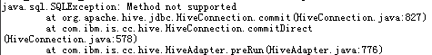
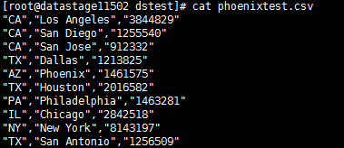
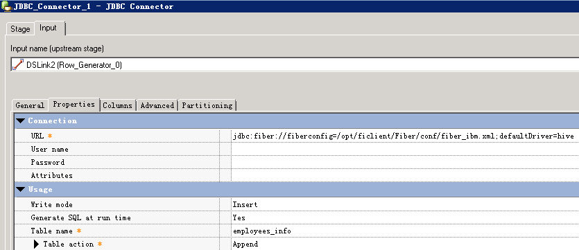
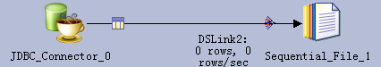
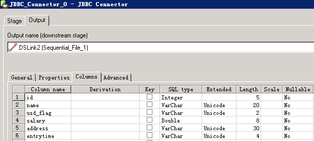
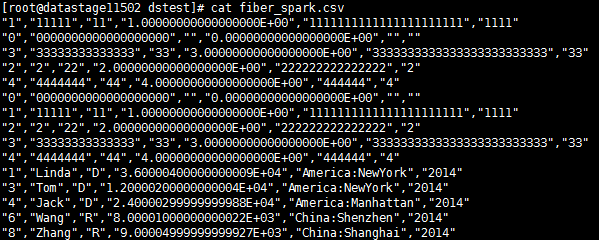
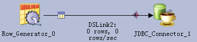
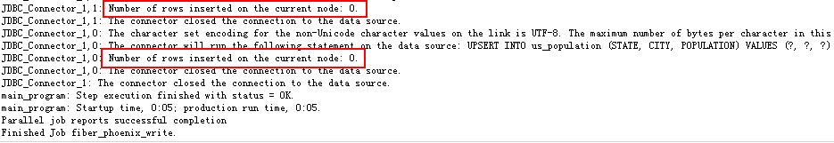
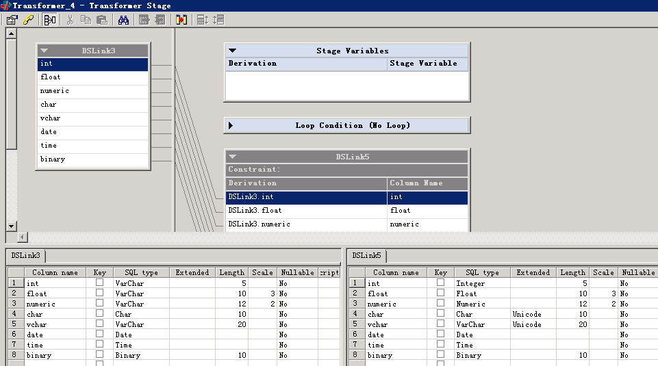
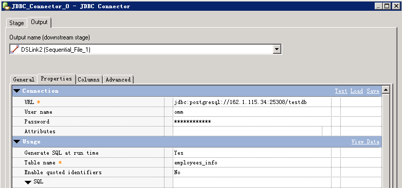

IBM InfoSphere DataStage connects to FusionInsight¶
Applicable scene¶
IBM InfoSphere DataStage 11.3.1.0 ↔ FusionInsight HD V100R002C50 (HDFS/Hive/SparkSQL)
IBM InfoSphere DataStage 11.5.0.2 ↔ FusionInsight HD V100R002C60U20 (HDFS/Hive/Phoenix/SparkSQL/Kafka/GaussDB)
Prerequisites¶
-
The installation and deployment of IBM InfoSphere DataStage 11.5.0.2 has been completed (this article is deployed on Centos7.2)
-
The deployment of FusionInsight cluster has been completed, version FusionInsight HD V100R002C60U20
Ready to work¶
Configure domain name resolution¶
- Use the
vi /etc/hostscommand to modify the hosts files of DataStage Server and Client, and add FI cluster node information, such as:
162.1.61.42 FusionInsight2
162.1.61.41 FusionInsight1
162.1.61.43 FusionInsight3
Configure Kerberos authentication¶
- Create a DataStage docking user in the FI management interface, grant the user the required permissions, and download the authentication credentials

-
Decompress the downloaded tar file to get the Kerberos configuration file krb5.conf and the user's keytab file.
-
Log in to the DataStage Server node as root, and copy the krb5.conf file of the FI cluster to the
/etcdirectory. -
Upload the user's user.keytab file to any directory of the DataStage Server node, such as
/home/dsadm.
Install FusionInsight Client¶
Refer to FI product documentation, download the complete client on the FI service management interface, upload it to DataStageServer, and install it to a custom directory, such as /opt/ficlient.
Docking HDFS¶
Import the SSL certificate of the FI cluster¶
- The browser exports the root certificate of the FI cluster
The browser opens the FI management interface, view the certificate, click the "Certificate Path" tab, select the root path, view the root certificate, under the "Details" tab, click "Copy to File" to export to cer format

- Import the certificate into the keystore file of DataStage
Upload the exported FI root certificate fi-root-ca.cer to the DataStage server, for example, under the path /home/dsadm, import the certificate into the keystore file, command reference:
/opt/IBM/InformationServer/jdk/bin/keytool -importcert -file /home/dsadm/fi-root-ca.cer -keystore /home/dsadm/iis-ds-truststore_ssl.jks -alias fi-root-ca. cer -storepass Huawei@123 -trustcacerts -noprompt
chown dsadm:dstage /home/dsadm/iis-ds-truststore_ssl.jks
- Generate and save the encrypted keystore password

Use the vi /home/dsadm/authenticate.properties command to create a new configuration file and save the cipher text generated in the previous step:
password={iisenc}SvtJ2f/uNTrvbuh26XDzag==
Execute chown dsadm:dstage /home/dsadm/ authenticate.properties to modify the owner of the configuration file
- Export truststore environment variables
Use vi /opt/IBM/InformationServer/Server/DSEngine/dsenv to edit the environment variables of DSEngine and add at the end
export DS_TRUSTSTORE_LOCATION=/home/dsadm/iis-ds-truststore_ssl.jks
export DS_TRUSTSTORE_PROPERTIES=/home/dsadm/authenticate.properties
- Restart DSEngine, refer to the command
su-dsadm
cd $DSHOME
bin/uv -admin -stop
bin/uv -admin -start
Read HDFS file¶
- Create assignment
Create a new parallel job and save it as hdfs2sf
Add File_Connector component and Sequential File component, and File_Connector to Sequential File link

- Refer to the figure below to modify the configuration


- Compile and run
After saving the configuration, compile and run

Open the Director client in the menu Tools -> Run Director to view the job log

- View the read data


Write HDFS file¶
- Create assignment
Create a new parallel job and save it as hdfswrite
Add Row Generator component and File Connector component, and Row Generator to File Connector link

- Refer to the figure below to modify the configuration


- Compile and run
Save — Compile — Run, view the job log:

- View written data

Docking Hive¶
Use Hive Connector¶
Note: The Hive JDBC Driver officially certified by Hive Connector is only DataDirect Hive Driver (IShive.jar). When using the IShive.jar included in DataStage 11.5.0.2 to connect to FusionInsight's hive, there will be a thrift protocol error. You need to consult IBM technology. Support the latest IShive.jar provided
Set JDBC Driver configuration file¶
- Create the isjdbc.config file under the $DSHOME path, add the path of DataDirect Hive Driver (IShive.jar) to the CLASSPATH variable, and add com.ibm.isf.jdbc.hive.HiveDriver to the CLASS_NAMES variable, refer to the command:
su-dsadm
cd $DSHOME
vi isjdbc.config
Add the following information in isjdbc.config:
CLASSPATH=/opt/IBM/InformationServer/ASBNode/lib/java/IShive.jar
CLASS_NAMES=com.ibm.isf.jdbc.hive.HiveDriver
- Configure Kerberos authentication information:
Create JDBCDriverLogin.conf in the directory where IShive.jar is located
cd /opt/IBM/InformationServer/ASBNode/lib/java/
vi JDBCDriverLogin.conf
The contents of the file are as follows:
JDBC_DRIVER_test_cache{
com.ibm.security.auth.module.Krb5LoginModule required
credsType=initiator
principal="test@HADOOP.COM"
useCcache="FILE:/tmp/krb5cc_1004";
};
JDBC_DRIVER_test_keytab{
com.ibm.security.auth.module.Krb5LoginModule required
credsType=both
principal="test@HADOOP.COM"
useKeytab="/home/dsadm/user.keytab";
};
Read Hive data¶
- Create assignment

- Change setting
URL reference is configured as follows:
jdbc:ibm:hive://162.1.61.41:21066;DataBaseName=default;AuthenticationMethod=kerberos;ServicePrincipalName=hive/hadoop.hadoop.com@HADOOP.COM;loginConfigName=JDBC_DRIVER_test_keytab;
Where JDBC_DRIVER_test_keytab is the authentication information specified in the previous step


- Compile and run
Save — Compile — Run, view the job log:

- View the read data

Write data to Hive table¶
- Create assignment

- Change setting


- Compile and run
Save — Compile — Run, view the job log, write 10 pieces of data, 2’11”

- View Hive table data:

Hive Connector uses the Insert statement to write data to the Hive table. Every time a piece of data is inserted, an MR task will be started. The efficiency is particularly low. This method is not recommended. You can write data directly to HDFS files.
Use JDBC Connector¶
If you want to use FusionInsight's Hive JDBC driver, add the jdbc driver and dependent packages in the CLASSPATH of the isjdbc.config file. The following error will be reported when you run the job. At this time, you need to load it by exporting the CLASSPATH environment variable.

And you can only use JDBC Connector, not Hive Connector, otherwise the following error will be reported

Set the CLASSPATH environment variable¶
-
The Hive jdbc driver package and dependent packages are located in the lib directory of the Hive client
/opt/ficlient/Hive/Beeline/lib. If the client is not installed, these jar packages can be uploaded to any directory separately. -
Set the CLASSPATH environment variable, add the full path of the above jar package, refer to the command:
su-dsadm vi $DSHOME/dsenv -
Add the relevant jar package at the end of the file (the specific path is adjusted according to the actual environment)
export CLASSPATH=/opt/ficlient/Hive/Beeline/lib/commons-cli-1.2.jar:/opt/ficlient/Hive/Beeline/lib/commons-collections-3.2.1.jar:/opt/ficlient/Hive/ Beeline/lib/commons-configuration-1.6.jar:/opt/ficlient/Hive/Beeline/lib/commons-lang-2.6.jar:/opt/ficlient/Hive/Beeline/lib/commons-logging-1.1.3. jar:/opt/ficlient/Hive/Beeline/lib/curator-client-2.7.1.jar:/opt/ficlient/Hive/Beeline/lib/curator-framework-2.7.1.jar:/opt/ficlient/Hive /Beeline/lib/curator-recipes-2.7.1.jar:/opt/ficlient/Hive/Beeline/lib/guava-14.0.1.jar:/opt/ficlient/Hive/Beeline/lib/hadoop-auth-2.7 .2.jar:/opt/ficlient/Hive/Beeline/lib/hadoop-common-2.7.2.jar:/opt/ficlient/Hive/Beeline/lib/hadoop-mapreduce-client-core-2.7.2.jar :/opt/ficlient/Hive/Beeline/lib/hive-beeline-1.3.0.jar:/opt/ficlient/Hive/Beeline/lib/hive-cli-1.3.0.jar:/opt/ficlient/Hive/ Beeline/lib/hive-common-1.3.0.jar:/opt/ficlient/Hive/Beeline/lib/hive-exec-1.3.0.jar:/opt/ficlient/Hive/Beeline/lib/hive-jdbc- 1.3.0.jar:/opt/ficlient/Hive/Beeline/lib/hive-metastor e-1.3.0.jar:/opt/ficlient/Hive/Beeline/lib/hive-serde-1.3.0.jar:/opt/ficlient/Hive/Beeline/lib/hive-service-1.3.0.jar: /opt/ficlient/Hive/Beeline/lib/hive-shims-0.23-1.3.0.jar:/opt/ficlient/Hive/Beeline/lib/hive-shims-common-1.3.0.jar:/opt/ficlient /Hive/Beeline/lib/httpclient-4.5.2.jar:/opt/ficlient/Hive/Beeline/lib/httpcore-4.4.jar:/opt/ficlient/Hive/Beeline/lib/jline-2.12.jar:/ opt/ficlient/Hive/Beeline/lib/libfb303-0.9.3.jar:/opt/ficlient/Hive/Beeline/lib/libthrift-0.9.3.jar:/opt/ficlient/Hive/Beeline/lib/log4j- 1.2.17.jar:/opt/ficlient/Hive/Beeline/lib/slf4j-api-1.7.5.jar:/opt/ficlient/Hive/Beeline/lib/slf4j-log4j12-1.7.5.jar:/opt /ficlient/Hive/Beeline/lib/super-csv-2.2.0.jar:/opt/ficlient/Hive/Beeline/lib/xercesImpl-2.9.1.jar:/opt/ficlient/Hive/Beeline/lib/zookeeper -3.5.1.jar
-
Import environment variables
source $DSHOME/dsenv -
Restart DSEngine
cd $DSHOME
bin/uv -admin -stop
bin/uv -admin -start
Read Hive data¶
- Create assignment

- Change setting

The URL is:
jdbc:hive2://162.1.61.41:21066/default;sasl.qop=auth-conf;auth=KERBEROS;principal=hive/hadoop.hadoop.com@HADOOP.COM;user.principal=test@HADOOP.COM; user.keytab=/home/dsadm/user.keytab;


- Compile and run


Write data to Hive table¶
- Create assignment

- Change setting


- Compile and run
Write 5 pieces of data, 1’49"


Import data into HDFS file of Hive table¶
- Create assignment

- Change setting


- Compile and run

- View written data

Hive table data increment 100

Incremental data is regularly and automatically imported into HDFS files of Hive tables¶
Incremental data can be imported into hive by adding HDFS files. If it is to be automatically executed on a regular basis, the imported file name needs to include variable parameters for setting and distinguishing, and then run the job in command or script mode to assign values to the parameters.
- Create assignment

- Set job parameters
Click the "job properties" button and set the parameters as follows

- Change setting

File Connector configures the name of the export file, and refers to the set parameters with "#"

- dsjob command to run the job
Save the compilation job and execute the dsjob -run command on the DataStage Server in the format:
dsjob -run [-mode
] -param = -jobstatus PROJECT_NAME JOB_NAME
Command reference:
su-dsadm
cd $DSHOME/bin
./dsjob -run -param jobruntime=`date +'%Y-%m-%d-%H-%M-%S'` -jobstatus dstage1 hive_append

- View HDFS files:

- View Hive data increment is 200

Docking SparkSQL¶
Similar to using the FI Hive JDBC driver, you can use the SparkSQL JDBC driver to connect to Hive. You also need to export the CLASSPATH environment variable to load the driver package and dependent packages.
SparkSQL jdbc does not support the insert into statement, it can only be used to read hive data, but cannot insert data into hive tables.
Set the CLASSPATH environment variable¶
-
The SparkSQL jdbc driver package and dependent packages are located in the Spark client lib directory
/opt/ficlient/Spark/spark/lib/. If the client is not installed, you can also upload the required jar package separately to any directory. -
Set the CLASSPATH environment variable, add the full path of the above jar package, and the spark client configuration file path (SparkSQL jdbc needs to read the configuration in hive-site.xml when connecting to hive):
su-dsadm
vi $DSHOME/dsenv
Configure the following:
export CLASSPATH= /opt/ficlient/Spark/spark/lib/commons-collections-3.2.2.jar:/opt/ficlient/Spark/spark/lib/commons-configuration-1.6.jar:/opt/ficlient/Spark/ spark/lib/commons-lang-2.6.jar:/opt/ficlient/Spark/spark/lib/commons-logging-1.1.3.jar:/opt/ficlient/Spark/spark/lib/curator-client-2.7. 1.jar:/opt/ficlient/Spark/spark/lib/curator-framework-2.7.1.jar:/opt/ficlient/Spark/spark/lib/guava-12.0.1.jar:/opt/ficlient/Spark /spark/lib/hadoop-auth-2.7.2.jar:/opt/ficlient/Spark/spark/lib/hadoop-common-2.7.2.jar:/opt/ficlient/Spark/spark/lib/hadoop-mapreduce -client-core-2.7.2.jar:/opt/ficlient/Spark/spark/lib/hive-common-1.2.1.spark.jar:/opt/ficlient/Spark/spark/lib/hive-exec-1.2 .1.spark.jar:/opt/ficlient/Spark/spark/lib/hive-jdbc-1.2.1.spark.jar:/opt/ficlient/Spark/spark/lib/hive-metastore-1.2.1.spark .jar:/opt/ficlient/Spark/spark/lib/hive-service-1.2.1.spark.jar:/opt/ficlient/Spark/spark/lib/htrace-core-3.1.0-incubating.jar:/ opt/ficlient/Spark/spark/lib/httpclient-4.5.2.jar:/opt/ficlient/Sp ark/spark/lib/httpcore-4.4.4.jar:/opt/ficlient/Spark/spark/lib/libthrift-0.9.3.jar:/opt/ficlient/Spark/spark/lib/log4j-1.2.17. jar:/opt/ficlient/Spark/spark/lib/slf4j-api-1.7.10.jar:/opt/ficlient/Spark/spark/lib/slf4j-log4j12-1.7.10.jar:/opt/ficlient/Spark /spark/lib/xercesImpl-2.9.1.jar:/opt/ficlient/Spark/spark/lib/zookeeper-3.5.1.jar:/opt/ficlient/Spark/spark/conf
-
Import environment variables
source $DSHOME/dsenv -
Restart DSEngine
cd $DSHOME
bin/uv -admin -stop
bin/uv -admin -start
Read Hive table data¶
- Create assignment

- Change setting

URL reference:
jdbc:hive2://ha-cluster/default;user.principal=spark/hadoop.hadoop.com@HADOOP.COM;saslQop=auth-conf;auth=KERBEROS;principal=spark/hadoop.hadoop.com@HADOOP. COM;user.principal=test@HADOOP.COM;user.keytab=/home/dsadm/user.keytab;

- Compile and run


Docking Phoenix¶
To use Phoenix to access HBase tables in JDBC mode, you also need to export the CLASSPATH environment variable to load the driver package and dependent packages.
Set the CLASSPATH environment variable¶
-
Phoenix-related jar packages are located in the lib directory of the HBase client
/opt/ficlient/HBase/hbase/lib. If the client is not installed, you can also upload the required jar packages separately to any directory. -
Set the CLASSPATH environment variable, add the full path of the above jar package, and the HBase client configuration file path (phoenix needs to read the configuration in hbase-site.xml when connecting):
su-dsadm
vi $DSHOME/dsenv
Configure the following:
export CLASSPATH=
/opt/ficlient/HBase/hbase/lib/commons-cli-1.2.jar:/opt/ficlient/HBase/hbase/lib/commons-codec-1.9.jar:/opt/ficlient/HBase/hbase/lib/commons -collections-3.2.2.jar:/opt/ficlient/HBase/hbase/lib/commons-configuration-1.6.jar:/opt/ficlient/HBase/hbase/lib/commons-io-2.4.jar:/opt/ ficlient/HBase/hbase/lib/commons-lang-2.6.jar:/opt/ficlient/HBase/hbase/lib/commons-logging-1.2.jar:/opt/ficlient/HBase/hbase/lib/dynalogger-V100R002C30. jar:/opt/ficlient/HBase/hbase/lib/gson-2.2.4.jar:/opt/ficlient/HBase/hbase/lib/guava-12.0.1.jar:/opt/ficlient/HBase/hbase/lib /hadoop-auth-2.7.2.jar:/opt/ficlient/HBase/hbase/lib/hadoop-common-2.7.2.jar:/opt/ficlient/HBase/hbase/lib/hadoop-hdfs-2.7.2 .jar:/opt/ficlient/HBase/hbase/lib/hadoop-hdfs-client-2.7.2.jar:/opt/ficlient/HBase/hbase/lib/hbase-client-1.0.2.jar:/opt/ ficlient/HBase/hbase/lib/hbase-common-1.0.2.jar:/opt/ficlient/HBase/hbase/lib/hbaseFileStream-1.0.jar:/opt/ficlient/HBase/hbase/lib/hbase-protocol- 1.0.2.jar:/opt/ficlient/HBase/hbase/lib/hbase-seconda ryindex-1.0.2.jar:/opt/ficlient/HBase/hbase/lib/hbase-server-1.0.2.jar:/opt/ficlient/HBase/hbase/lib/htrace-core-3.1.0-incubating. jar:/opt/ficlient/HBase/hbase/lib/httpclient-4.5.2.jar:/opt/ficlient/HBase/hbase/lib/httpcore-4.4.4.jar:/opt/ficlient/HBase/hbase/lib /httpmime-4.3.6.jar:/opt/ficlient/HBase/hbase/lib/jackson-core-asl-1.9.13.jar:/opt/ficlient/HBase/hbase/lib/jackson-mapper-asl-1.9 .13.jar:/opt/ficlient/HBase/hbase/lib/log4j-1.2.17.jar:/opt/ficlient/HBase/hbase/lib/luna-0.1.jar:/opt/ficlient/HBase/hbase/ lib/netty-3.2.4.Final.jar:/opt/ficlient/HBase/hbase/lib/netty-all-4.0.23.Final.jar:/opt/ficlient/HBase/hbase/lib/noggit-0.6. jar:/opt/ficlient/HBase/hbase/lib/phoenix-core-4.4.0-HBase-1.0.jar:/opt/ficlient/HBase/hbase/lib/protobuf-java-2.5.0.jar:/opt /ficlient/HBase/hbase/lib/slf4j-api-1.7.7.jar:/opt/ficlient/HBase/hbase/lib/slf4j-log4j12-1.7.7.jar:/opt/ficlient/HBase/hbase/lib /solr-solrj-5.3.1.jar:/opt/ficlient/HBase/hbase/lib/zookeeper-3.5.1.jar:/opt/ficlient/HBase/hbase/conf
-
Import environment variables
source $DSHOME/dsenv -
Restart DSEngine
cd $DSHOME bin/uv -admin -stop bin/uv -admin -start
Create jaas configuration file¶
- Phoenix connection needs to query zookeeper, and the Kerberos authentication of zookeeper needs to specify the jaas configuration file
su-admin
vi /home/dsadm/jaas.conf
The contents of the file are as follows:
Client {
com.ibm.security.auth.module.Krb5LoginModule required
credsType=both
principal="test@HADOOP.COM"
useKeytab="/home/dsadm/user.keytab";
};
Read Phoenix table data¶
- Create assignment

- Change setting

- URL reference:
jdbc:phoenix:fusioninsight3,fusioninsight2,fusioninsight1:24002:/hbase:test@HADOOP.COM:/home/dsadm/user.keytab

- Configure JVM options as
-Djava.security.auth.login.config=/home/dsadm/jaas.conf


- Compile and run


Write Phoenix table data¶
The Phoenix insert statement is upsert into and does not support the Insert into statement, so you cannot use the JDBC Connector to automatically generate SQL statements at runtime. You need to fill in it yourself, otherwise an error will be reported:
main_program: Fatal Error: The connector failed to prepare the statement: INSERT INTO us_population (STATE, CITY, POPULATION) VALUES (?, ?, ?). The reported error is: org.apache.phoenix.exception.PhoenixParserException: ERROR 601 ( 42P00): Syntax error. Encountered "INSERT" at line 1, column 1..
- Create assignment

- Change setting


- Compile and run


Docking Fiber¶
To connect to Fiber, you need to install the FI client first
Modify JDBC Driver configuration file¶
- Modify the isjdbc.config file in the $DSHOME path, add the path of the Fiber jdbc driver and dependent packages to the CLASSPATH variable, add com.huawei.fiber.FiberDriver; org.apache.hive.jdbc.HiveDriver; org.apache. phoenix.jdbc.PhoenixDriver
Reference command:
su-dsadm
cd $DSHOME
vi isjdbc.config
The configuration is as follows:
CLASSPATH=/opt/IBM/InformationServer/ASBNode/lib/java/IShive.jar;/opt/mppdb/jdbc/gsjdbc4.jar;/opt/Progress/DataDirect/JDBC\_60/lib/mongodb.jar;/opt/ ficlient/Fiber/lib/commons-cli-1.2.jar;/opt/ficlient/Fiber/lib/commons-logging-1.1.3.jar;/opt/ficlient/Fiber/lib/fiber-jdbc-1.0.jar; /opt/ficlient/Fiber/lib/hadoop-common-2.7.2.jar;/opt/ficlient/Fiber/lib/hive-beeline-1.2.1.spark.jar;/opt/ficlient/Fiber/lib/hive -common-1.2.1.spark.jar;/opt/ficlient/Fiber/lib/hive-jdbc-1.2.1.spark.jar;/opt/ficlient/Fiber/lib/jline-2.12.jar;/opt/ ficlient/Fiber/lib/log4j-1.2.17.jar;/opt/ficlient/Fiber/lib/slf4j-api-1.7.10.jar;/opt/ficlient/Fiber/lib/slf4j-log4j12-1.7.10. jar;/opt/ficlient/Fiber/lib/super-csv-2.2.0.jar;
CLASS_NAMES=com.ibm.isf.jdbc.hive.HiveDriver;org.postgresql.Driver;com.ddtek.jdbc.mongodb.MongoDBDriver;com.huawei.fiber.FiberDriver;org.apache.hive.jdbc.HiveDriver;org. apache.phoenix.jdbc.PhoenixDriver
Modify Fiber Configuration File¶
- DataStage uses IBM jdk, you need to create a new Fiber configuration file for DataStage to use
cd /opt/ficlient/Fiber/conf
cp fiber.xml fiber_ibm.xml
- Modify the following two parameters of the phoenix, hive, and spark drivers in fiber_ibm.xml:
-java.security.auth.login.config is modified to /home/dsadm/jaas.conf
-zookeeper.kinit is modified to /opt/IBM/InformationServer/jdk/jre/bin/kinit
- The content of the file /home/dsadm/jaas.conf is as follows:
Client {
com.ibm.security.auth.module.Krb5LoginModule required
credsType=both
principal="test@HADOOP.COM"
useKeytab="/home/dsadm/user.keytab";
};
- For other configuration items, please refer to FI product document Fiber Client Configuration Guide to modify.
Use Hive Driver to read data¶
- Create assignment

- Change setting

URL reference:
jdbc:fiber://fiberconfig=/opt/ficlient/Fiber/conf/fiber_ibm.xml;defaultDriver=hive


- Compile and run


Use Hive Driver to write data¶
- Create assignment

- Change setting



- Compile and run

Use Spark Driver to read data¶
- Create assignment

- Change setting

URL reference:
jdbc:fiber://fiberconfig=/opt/ficlient/Fiber/conf/fiber_ibm.xml;defaultDriver=spark


- Compile and run


Use Phoenix Driver to read data¶
- Create assignment

- Change setting

URL reference:
jdbc:fiber://fiberconfig=/opt/ficlient/Fiber/conf/fiber_ibm.xml;defaultDriver=phoenix


- Compile and run
Currently unable to read the data," The connector could not determine the value for the fetch size.", the problem is being confirmed

Use Phoenix Driver to write data¶
- Create assignment

- Change setting


URL reference:
jdbc:fiber://fiberconfig=/opt/ficlient/Fiber/conf/fiber_ibm.xml;defaultDriver=phoenix
- Compile and run
Write 0 rows of data, the problem is being confirmed

Docking with Kafka¶
Note: Kafka Connector does not support sending or consuming numeric fields such as integer, float, double, numeric, decimal, etc., and needs to be converted to char, varchar, longvarchar, etc., otherwise the following error will be reported:
main_program: APT_PMsectionLeader(2, node2), player 2-Unexpected termination by Unix signal 9(SIGKILL).
Install kafka client¶
-
Kafka Connector needs to configure Kafka client Classpath. You can install the kafka client on the DataStage node to get the kafka-client jar package. For installation steps, refer to FusionInsight product documentation.
-
Kafka Client Classpath needs to provide the paths of three jar packages of kafka-client, log4j, and slf4j-api, such as:
/opt/ficlient/Kafka/kafka/libs/kafka-clients-0.10.0.0.jar;/opt/ficlient/Kafka/kafka/libs/log4j-1.2.17.jar;/opt/ficlient/Kafka/kafka/libs /slf4j-api-1.7.21.jar
Send message to kafka¶
- Create assignment

- Change setting
RowGenerator generates data


Transformer data type conversion:

Kafka configuration:

- Compile and run

Read Kafka messages¶
- Create assignment

- Change setting



- Compile and run
View the read data

Docking MPPDB¶
Obtain MPPDB JDBC Driver¶
-
Obtained from the MPPDB release package, the package name is Gauss200-OLAP-VxxxRxxxCxx-xxxx-64bit-Jdbc.tar.gz
-
After decompression, get gsjdbc4.jar, upload it to DataStage Server
Modify JDBC Driver configuration file¶
- Modify the isjdbc.config file of the $DSHOME path, add the path of MPPDB Driver in the CLASSPATH variable, and add org.postgresql.Driver in the CLASS_NAMES variable
su-dsadm
cd $DSHOME
vi isjdbc.config
Configuration:
CLASSPATH=/opt/IBM/InformationServer/ASBNode/lib/java/IShive.jar;/opt/mppdb/jdbc/gsjdbc4.jar;
CLASS_NAMES=com.ibm.isf.jdbc.hive.HiveDriver;org.postgresql.Driver;
Read MPPDB table data¶
- Create assignment

- Change setting

The URL format is: jdbc:postgresql://host:port/database

- Compile and run


Write data to MPPDB table¶
- Create assignment

- Change setting


The URL format is: jdbc:postgresql://host:port/database
- Compile and run

- View MPPDB table data: